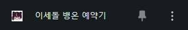
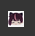
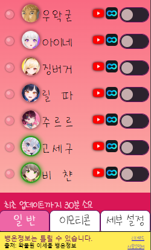
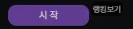

확장 프로그램 최초 설치 시 크롬 우측 상단에 위 버튼을 클릭해 주세요.

그리고 드래그를 내려 이세돌 뱅온 예약기를 찾아서 핀을 고정시켜 주시면 됩니다. 그러면

와 같은 아이콘이 크롬 우측상단에 고정으로 떠있게 됩니다. 이세돌 뱅온 예약기는 자동뱅온 기능 이외에도 몇 가지 정보를 제공하니, 항상 핀을 고정해 두시는 걸 추천 드립니다. 저 아이콘을 클릭하면

최초 설치 시에는 위와 같은 팝업창이 뜹니다. 아직 왁물원 공지사항과 뱅온정보 등을 받아오지 않은 상태로 30분 후 최초로 정보들을 받아옵니다.
이세돌 뱅온 예약기는 우왁굳과 이세계아이돌 멤버들의 방송이 켜졌을 때 그에 맞춰 자동으로 해당 방송을 열어주는 확장프로그램입니다.
기본적인 기능 이외에도 몇 가지 추가기능이 있어 사용방법을 설명해 드립니다.
*원하시는 방송인의 스위치를 켜두셔야 동작합니다.
*최초 설치 시 뜨는 권한허용을 해 주셔야 동작합니다.
*방송 시작부터 최대 1분여의 딜레이가 있을 수 있습니다. 그 시간 이내에 동작하지 않았다고 문제가 있는 게 아닙니다.
(이미 방송에 들어갔으면 중복해서 창을 열지 않습니다.)
하트포인트는 방송시청과 참여로 모을수 있는 포인트입니다.
포인트를 모으기 원하는 방송에 들어갔다면 채팅창 상단에 있는 포인트박스에서 시작버튼을 눌러주세요.
시작버튼을 누르지 않으면 해당 방송에서는 포인트가 모이지 않습니다.
현재 포인트 획득 방법은 세 가지가 있습니다.
1. 방송시청시 주기적으로 포인트를 획득합니다.
2. 가끔 하트아이콘이 활발히 움직일때 하트를 클릭하면 다량의 보너스 포인트를 획득합니다.
3. 채팅을 칠때마다 포인트를 획득합니다.
주기적으로 획득하는 포인트는 구독자와 비구독자 사이에 차이가 있습니다. 1티어 구독과 2티어 구독사이에도 차이가 있으며 구독개월 수가 늘어날수록 미량의 포인트를 더 획득합니다.
1티어 구독자라도 3년 이상의 장기구독자라면 이제 막 시작한 2티어 구독자보다 더 많은 포인트를 획득할 수 있습니다.
비구독자라도 채팅을 열심히 친다면 충분히 따라잡는게 가능합니다. 채팅과 보너스 포인트는 구독자와 비구독자 사이에 차등이 없습니다. (추후 밸런스가 조정될 수도 있습니다)
과도한 혹은 지나치게 반복적인 채팅은 채팅제재의 사유가 될 수있습니다.
하트포인트는 트위치 채널포인트와같은 배팅기능을 지원하진 않습니다.
대신해서, 누가 더 활발히 방송에 참여해 더 많은 포인트를 모았는가 경쟁이 가능합니다.
누적포인트 이외에도 7일, 30일 랭킹을 산출해, 후발주자도 경쟁에 참여가 가능하게 했습니다.
또한 10만포인트 달성시 뱅온예약기에서 사용가능한 소소한 특전이 지급되며, 이세돌과 우왁굳님 방송에는 각기 다른 왁세돌 특전이 있습니다.
7개의 왁세돌 특전을 모두 모아보세요.
리더보드는 1시간에 한번씩 업데이트 됩니다. 다만, 사용자와 서버 데이터베이스간 업데이트가 실시간이 아니며, 리더보드에 내 점수가 갱신되는 시간은 더 오래 걸릴 수 있습니다.
박스 클릭안될시 ON 옵션은 포인트박스가 마우스에 반응하지 않을때만 키는걸 추천드립니다. 포인트박스를 최상단 요소로 만드는 옵션이라 프로필 스크롤을 내렸을때 겹쳐보일 수 있습니다.
리더보드 바로가기엣지의 경우 edge://media-engagement/ 를 열어보세요.
하단 Origin열에서 https://play.sooplive.co.kr를 찾아서 Score와 Is High를 보시기 바랍니다. 크롬은 기본적으로 가본적없는 사이트에 들어갔을 때 조작없이는 영상이 재생되지 않도록 자동 재생 제한정책을 두고 있습니다. 해당 사이트에 들어가서 수 분 이상의 영상 시청을 여러번 꾸준히 했을 경우에만 신뢰할 수 있는 사이트로 등록되어 자동 재생이 허용됩니다. 이 점수가 낮을 경우
(Is High가 No일 경우) 뱅온 예약기가 연 방송이 아니라 아무 숲 생방송에서든 새로고침을 했을경우 똑같이 영상이 재생되지 않는것을 확인할 수 있습니다. 생방송이나 VOD를 여러편 시청하면 자연스럽게 제한이 해제되며, 새로운 컴퓨터로 접속, 새로운 브라우저로 접속, 혹은 컴퓨터 포멧, 브라우저의 쿠키 초기화시에 이 점수(MEI)도 같이 초기화 될 수 있으니 이 경우에 며칠정도 불편을 참아주시면 감사하겠습니다.
해결이 되지 않는다면, roman100j12@gmail.com 로 연락주시면 최대한 도와드리겠습니다.
v3.0.2
▶스크린모드에서 포인트박스 포지션 문제 해결
▶하트포인트 수급량 너프 (획득 간격 소폭 상승, 채팅 수급량 절반으로 줄임)
- 의도했던 최대 하루 수급량보다 훨씬 많은 하루만에 10만포인트를 달성하시는 분이 몇 분있어 너프가 필요하다 판단했습니다.
▶동기화 저장소에 데이터 백업과 다운로드 기능추가 (반응성을 위해서 로컬을 메인으로 하는건 그대로)
▶포인트 업로드 다운로드 주기 단축 (유지 비용문제와 관련된 안건이라 추후 다시 늘어날 수도 있습니다.)
v3.0.1
▶하트포인트 zindex올리는 옵션추가
▶전체화면에서 나올시 바로 리포지셔닝
v3.0.0
▶하트포인트 신설
▶리더보드 페이지 작성
▶버그 수정
v2.5.0
▶OGQ단축어 매크로 기능이 추가되었습니다.
▶축하창 기능이 추가되었습니다.
▶FAQ페이지가 작성되었습니다.
v2.4.4
▶뱅온 우선순위 설정이 가능해졌습니다. 최대 3명의 방송인까지 스위치를 한번 더 눌러 설정가능합니다.
-세부설정에서 다른탭종료시 적용됩니다.
▶사용설명서 페이지를 읽기 편하게 재작성했습니다.
v2.4.3
▶up버튼 클릭 기능 세분화, 우왁굳, 이세돌, 커스텀 방송만 up버튼을 누르게 설정이 가능해졌습니다.
v2.4.2
▶alt키 차단기능 추가
▶X embed기능 최신화
▶업데이트 안내방법 개선
v2.4.1
▶이모티콘 기능 에러 대응
v2.4.0
▶이모티콘 관련 기능 추가
▶이스터에그 4개 추가 및 기존 이스터에그 개선
▶UI 개선
v2.3.1
▶폰트변경기능 추가
▶멀티뷰 초과시 반응추가
▶공지사항기능 추가
v2.3.0
▶이스터에그 추가
▶커스텀id기능 추가
▶썸네일 미리보기 추가
▶up버튼 자동클릭기능 추가
v2.2.0
▶숲 전환 대응
v2.1.2
▶데이터베이스 리딩방식 변경
▶안읽은공지에 표식 추가
v2.1.0
▶데이터베이스 리딩방식 변경
v2.1.0
▶UI를 전체적으로 개선했습니다. 글자 자간을 맞추고, 탭으로 설정들을 분리했습니다.
▶왁물원의 공지들을 데이터베이스에서 가져옵니다. 이세돌 공지 혹은 카페공지와 이세돌 공지를 합쳐서 최근 5개를 보여줍니다. (30분 단위로 최신화 됩니다.)
▶누군가 방송을 키면 프로필사진에 방송중인걸 알아볼 수 있게 표시되며 프로필 사진위로 마우스를 올리면 방송 제목이 뜨고 클릭하여 바로 방송에 들어가 볼 수 있습니다.
▶이스터에그 2개를 넣어놓았습니다.
v2.0.2
▶뱅온정보 읽기방식을 실시간 구독형에서 스케쥴형으로 변경
v2.0.0
▶뱅온정보 제공 기능을 도입했습니다. 왁물원에 뱅온정보가 올라올때 그에 맞춰 자동으로 뱅온정보가 제공되며 신호등 모양의 표시로 쉽게 인지할 수 있게 했습니다.
- 신호아이콘 위로 마우스를 올리면 툴팁이 떠오릅니다.
▶슬라이드가 켜졌는지 꺼졌는지 구분하기 힘들다는 피드백을 받아 켜졌을때 버튼 스위치가 초록색으로 바뀌어 더 직관적으로 이해할 수 있게 하였습니다.
▶설정값 저장방식을 개선했습니다. 이제 업데이트가 되었거나 확장프로그램을 껐다가 키더라도 설정값은 유지됩니다.
v1.21
▶X도 변환목록에 추가했습니다.
▶아프리카vod 캐치 판별방법을 개선했습니다. url에 의존하지 않습니다.
▶iframe 사이즈를 직접 조절할 수 있게 했습니다.
- url 앞에 붙여서 (500,500) 식으로 가로, 세로 사이즈를 지정할 수 있습니다. 없을 경우 기본사이즈로 출력됩니다. (일반적인 경우 굳이 조정할 필요 없습니다)
v1.20
▶글에서 하나의 url만 변환하던 것을 모든 url을 변환하게 업데이트 했습니다. (다만, 한 url당 한번만 변환됩니다.)
▶아프리카tv vod뿐만 아니라, 인스타그램, 사운드클라우드 링크도 적절하게 변환해줍니다.
▶아프리카tv catch를 제대로 변환하지 못했던 문제를 해결했습니다.
v1.11
▶미갤이 포함되지 않았던 오류를 수정했습니다.
v1.1
▶디시인사이드에서 아프리카tv vod링크를 자동으로 플레이어로 전환시켜주는 기능을 넣었습니다. 이제 디시인사이드에서도 편하게 클립이나 다시보기를 시청하세요.